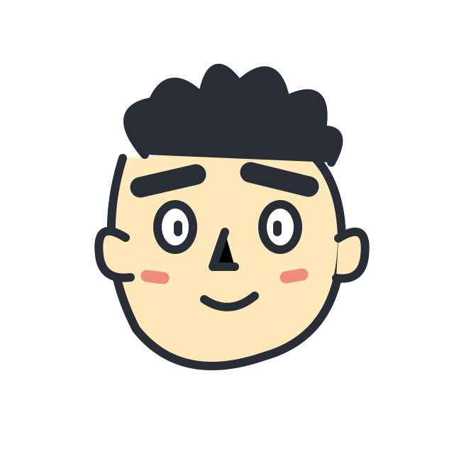

ツ
かおディスバトル
（仮）
● CPU DEMO
DRAW YOUR FACE. ROAST WITH LOVE.
その顔、
ツッコミ待ち。
自分で描いた顔が、今日の主役。たとえのセンスで、CPUといざ勝負！
01
顔を描く
02
ツッコミ対決
03
結果発表
YOUR CHARACTER
まずは、顔を描こう。
うまくなくて、いい。
◡
ここに、あなたの顔。
マウスでも、指でも、自由にどうぞ
✎
ペン
▱
消しゴム
＋
太さ
7
ちょっとヘンなくらいが、ちょうどいい。
↶ 元に戻す
全消去
FACE ROAST ARENA
ROUND 1 / 3
デモ判定
あなた
YOUR FACE
HP
VS
まゆげ部長
CPU

HP
YOUR PUNCHLINE
あなたのツッコミ！
あなたの番
まゆげ部長の顔を、何かにたとえてみよう。
傷つける言葉より、笑えるたとえを。
0 / 120
ツッコミを放つ！
↗
✦
同じ顔で再戦 ↗
顔を描き直す
対戦ログ
おもしろい一言、残していこう。
✳ デモ判定：顔画像は解析していません。CPUは定型文で攻撃します。1回のダメージは0〜30です。